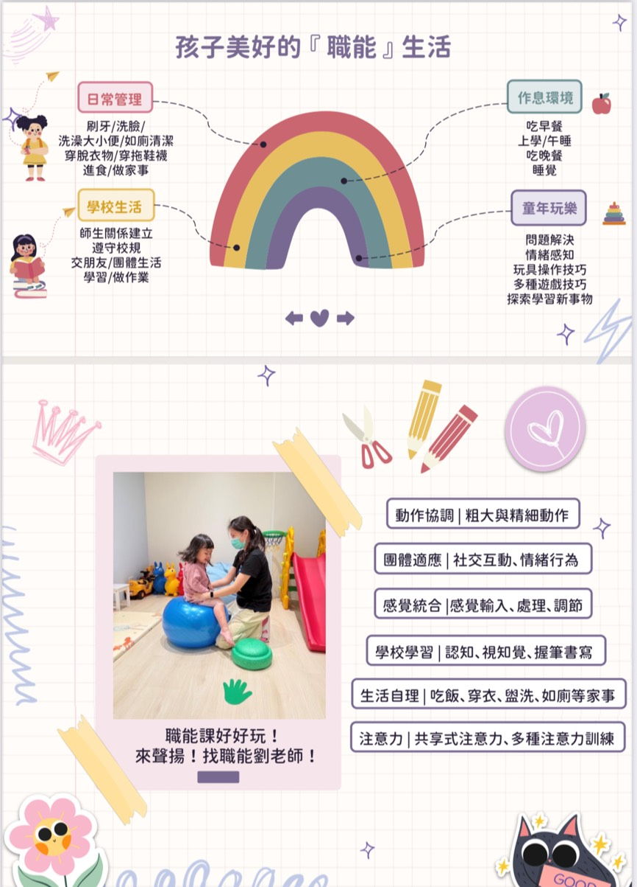

職能治療：幫助孩子快樂成長

職能治療（Occupational Therapy，簡稱 OT）是一種幫助孩子學會生活技能的專業治療方式，讓他們能夠更輕鬆地完成日常活動，無論是穿衣、吃飯，還是學習和玩耍。我們的職能治療師會為每一位孩子量身設計專屬的計劃，讓他們在成長中充滿自信，快樂學習！
職能治療對孩子有哪些具體好處？
學會自理生活技能（如穿衣、吃飯、整理書包）
這是職能治療中非常重要的一部分！對於小朋友來說，學會自己穿衣、吃飯和整理物品，是邁向獨立的一大步。職能治療師會通過有趣的活動和遊戲，逐步引導孩子學會這些基本技能。這不僅能提高孩子的自理能力，還能讓他們建立自信，感受到自己能做得更好！
範例：透過設計有趣的穿衣遊戲，孩子可以學會如何穿上襪子、扣上扣子，甚至學會使用餐具。
提升運動協調能力（精細與大肌肉動作）
無論是寫字、畫畫等精細動作，還是跳躍、奔跑、爬樓梯等大肌肉運動，這些技能對孩子的日常生活至關重要。職能治療師會根據孩子的發展階段，設計合適的活動來增強他們的協調性和運動能力。
範例：通過搭積木、剪紙、玩色彩畫筆等活動，來加強孩子的手眼協調能力，或者通過跑步、跳躍等遊戲來發展孩子的大肌肉。
提升專注力與學習能力
許多孩子可能在專注、記憶力、理解力等方面會面臨挑戰。職能治療師會通過有趣的遊戲，幫助孩子訓練專注力，提升他們的學習能力。這些活動會幫助孩子在學校學習上表現得更好，並且能夠專心處理日常生活中的小事。
範例：設計小小的記憶遊戲、專注力訓練，甚至讓孩子進行簡單的任務，例如整理玩具或完成簡單的拼圖遊戲。
改善社交技能與情感表達
孩子需要學習如何與他人交朋友、合作和分享，這對他們的情感發展和社會適應非常重要。職能治療師會針對孩子在情感和社交方面的需求進行治療，讓孩子學會如何表達自己、理解他人，並建立健康的人際關係。
範例：利用角色扮演遊戲，讓孩子在與其他孩子的互動中學習如何合作、分享，甚至模擬如何在不同情況下表達自己的感受。
哪些孩子需要職能治療？
- 發展遲緩的孩子：如果孩子在語言、社交、動作或學習方面發展較慢，職能治療師能提供專業的指導，幫助孩子迎頭趕上。
- 自閉症、ADHD 等特殊需求的孩子：這些孩子可能在社交互動、注意力集中、情緒管理方面遇到挑戰。職能治療師會根據他們的個別情況，幫助他們提升自我管理和社交技能。
- 有身體傷害或手術的孩子：手術後或受傷的孩子，可能需要職能治療來恢復正常的日常活動能力，特別是手部運動、協調性和自理能力等。
- 學習困難的孩子：職能治療能幫助孩子在學校學習上克服挑戰，改善注意力和專注力，提升他們的學習效率。
我們如何幫助您的孩子？
職能治療師會先了解孩子的需求和挑戰，然後制定一個根據孩子的年齡和發展進度調整的治療計劃。治療過程中，孩子會進行許多有趣的活動，這些活動不僅讓孩子學習新技能，還能提高他們的自信心和獨立性。
本文為一般衛教資訊，無法取代專業評估。若對孩子的發展有疑問，歡迎來電 0910-071-370 或透過 LINE 與我們聊聊。
← 回文章列表